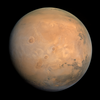

mars
phenomenon

Source: Wikipedia
Wikipedia Page (Something wrong with this association? Let us know.)
Wikidata Page (Something wrong with this association? Let us know.)
Occurs in:
- earth_mars_travel__duration
- earth_surface_viewpoint_mars__apparent-magnitude_scale
- earth_surface_viewpoint_mars_rising__time
- earth_surface_viewpoint_mars_setting__time
- earth_surface_viewpoint_mars__subtended_angle
- mars_rising__local_time
- mars__mean_of_diameter
- sun_mars__solar_constant
- mars__standard_gravitational_acceleration
- mars_atmosphere__thickness
- mars_axis__tilt_angle
- mars_ellipsoid_equator__radius
- mars_moon__count
- mars_orbit__sidereal_period
- mars_orbit__synodic_period
- mars_surface_viewpoint_venus_rising__time
- mars_surface_viewpoint_venus_setting__time